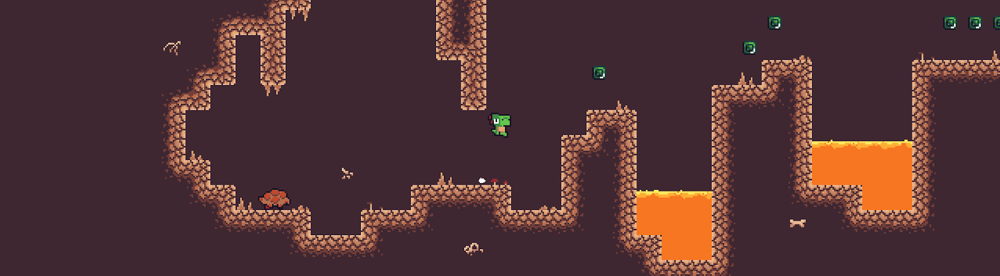

Hello, hello. My name is Laec and I made this course. I am a self-taught hobbyist game developer, I started my video game journey back in 2012 when my uncle gave me two books and a key for the game maker studio engine for Christmas. I was never taught any game development or computer science formally in school nor college, and as such my journey has been one full of youtube tutorials, online courses and good old trial and error. For many years my passion for game development grew as I made more projects, modded games and explored computer science and game development further. However, once I graduated from college and started working as a paraprofessional in schools I noticed something that troubled me: so many students I worked with loved games, but had never even considered making one. So many students saw game development (and computer science) as unapproachable, something that only "smart" kids could do. I began to realize that without my uncle to give me the opportunity, I would have never started with game development, and that so many students never realize that they can make a game. As such, when I started a new position at Ecolibrium3, I jumped at the opportunity to create a course on game development, one designed to be approachable and beginner friendly, one to inspire students to explore their own ideas and become eager to learn more.
While my original prompt while designing this course was to be a fast one week summer school course, I was allowed some creative liberties. This course is designed to be primarily self guided, with students able to choose which modules to do and what features to add to their game. It is designed to be able to be taken in person or on one's own at your own pace. It is designed to be beginner friendly, requiring no previous programming or game development experience. It is designed to be ADHD friendly, with short, concise modules that can immediately can be tested and experimented with for a continuous sense of progress. This course was designed for high schoolers in mind, but can easily be taken by adults and/or enthusiastic younger students. This course was designed to require only a computer and an internet connection.
This course is not a programming course. While we will be programming, it is not the main focus of the course (and I doubt I could teach programming in a week.) This course is also not a be-all end-all course for game development. In order to keep the modules short and simple, many ideas (roughly one third) had to be scrapped or simplified. Most modules in this course are not the best nor most efficient ways of doing things, they are simply ways that are quick, simple and functional. This course is designed to be extremely limited in it's scope, once you finish your game I highly recommend beginning to explore other tutorials, ideas and starting your own projects. This course is only supposed to be a jumping off point for your own game development and computer science journey.
At the end of the course you will have successfully created your own platformer game using the modules of your choice. Throughout the course you will be given opportunities to explore ideas outside of the modules themselves, making your game truly your own. Additionally, you will have learned about thow to find and fix several common issues and bugs in programming. You will leave this course with some basic knowledge on several programming and game development fundamtentals. Finally, at the end of this course I have provided lots of resources, both of my own make and online, for you to be able to use in your future projects.
If you are itching to get started with the course go ahead and move to the Getting Started section. I also recommend reading through the Debugging module to learn some common problems that can come up with programming, and you can also check out a short demo of the game with all modules complete below.
